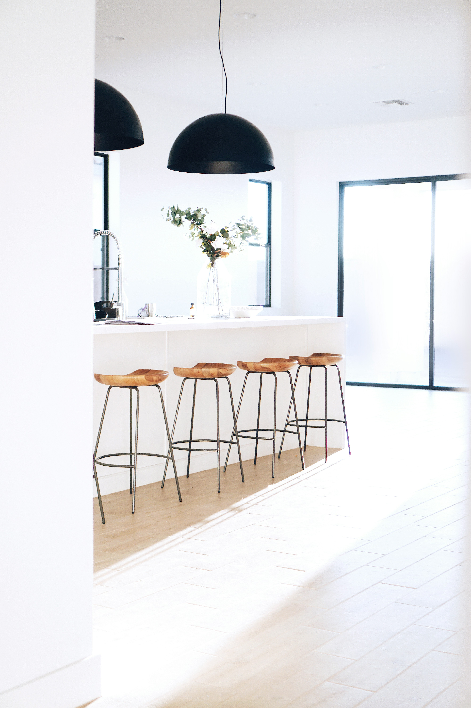

Industrial Interior Design
ndustrial Interior Design offers a bold and dynamic aesthetic that draws inspiration from raw, unfinished materials. Exposed brick, steel beams, and reclaimed wood come together to evoke a sense of rugged luxury. We focus on creating open, spacious layouts with an emphasis on the integrity of architectural elements. Large windows and industrial-style lighting fixtures enhance the urban vibe, making it the perfect style for those who appreciate an edgy, sophisticated atmosphere.

Scandinavian Interior Design
Scandinavian Interior Design is all about clean lines, natural beauty, and minimalist functionality. Rooted in the Scandinavian ethos of "hygge" — the art of creating a cozy, comfortable environment — this style incorporates neutral tones, natural wood, and plenty of light to make your space feel open and inviting. We focus on practical yet beautiful designs that are functional and aesthetically pleasing, perfect for creating a calm, peaceful sanctuary.
Bohemian Interior Design
For those who seek a more eclectic, vibrant approach, Bohemian Interior Design is an ideal choice. This style invites creativity, personal expression, and a blend of cultures through bold colors, rich textures, and an abundance of patterns. We curate spaces with vintage furniture, handwoven rugs, and curated global accents to create a free-spirited atmosphere. Each room is a reflection of your unique style, filled with comfort and visual interest.
Classic Interior Design
Our Classic Interior Design services emphasize timeless elegance and sophisticated refinement. Rooted in traditional architecture and décor, we incorporate luxurious materials such as fine woods, marble, and rich textiles to create spaces that feel both grand and enduring. Symmetry, balance, and intricate detailing are key features, ensuring your home exudes a sense of grace and sophistication.